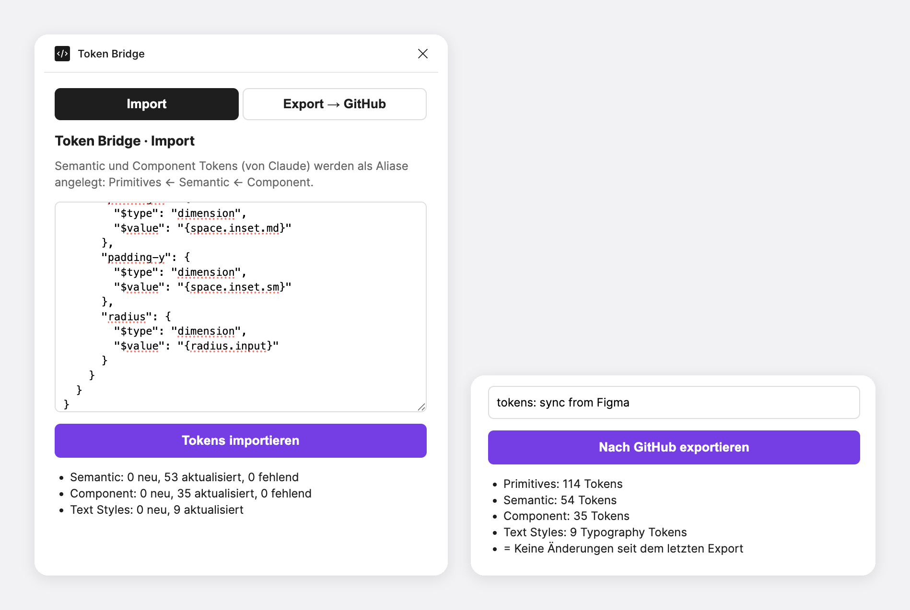
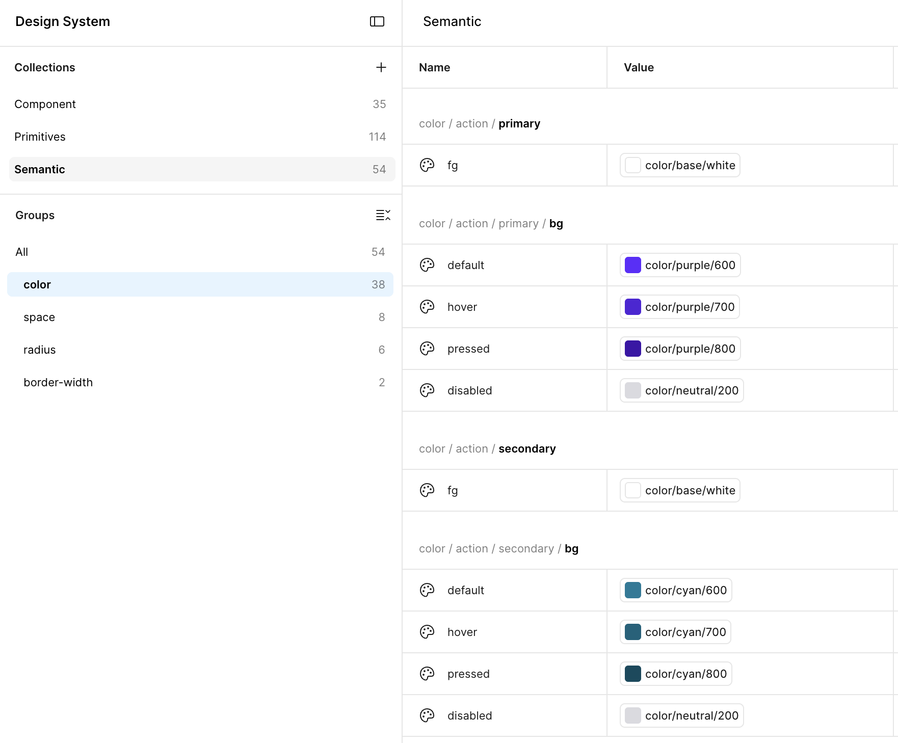
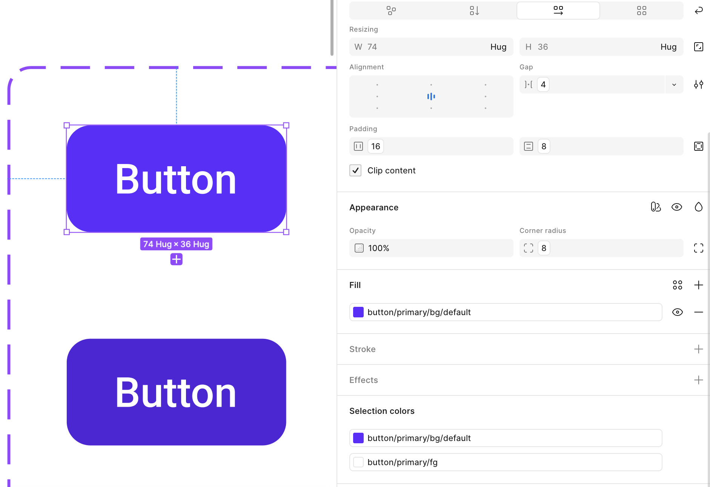
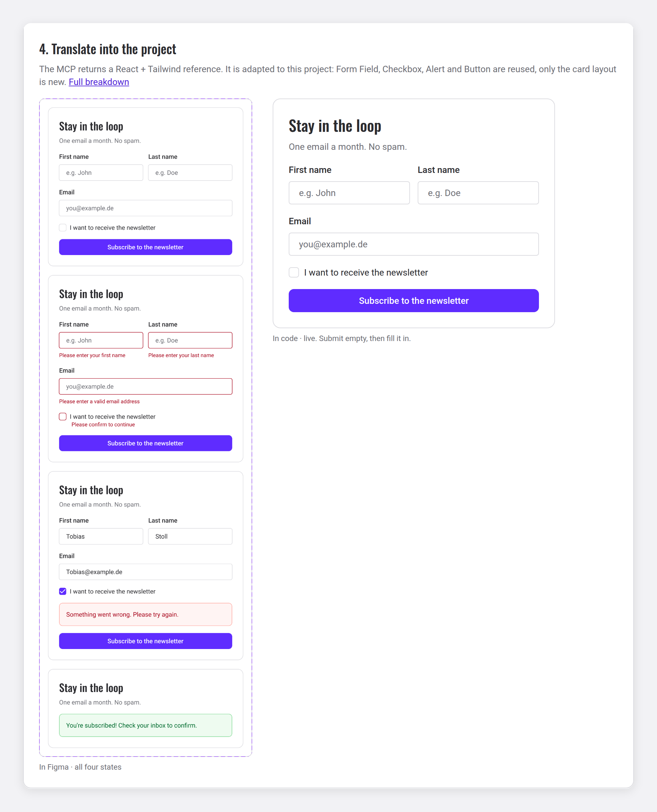

Case study · Design system · Client under NDA
From 60 legacy components to one source of truth
A design system for a company building safety-critical software had grown for years without tokens, and parts of it lived only in code. In three months I made Figma the single source of truth, with a workflow straight into code, ready for AI-supported development.
- 60 → 30 core components
- 440+ tokens in three tiers
- 40 to 50 % less handover time
- Role
- Freelance UX consultant for the design system
- Team
- 3 developers, a UI designer (brand), a UX lead (requirements)
- Duration
- 3 months, plus a follow-up
- Tools
- Figma, Figma MCP, Claude, GitHub, my own Figma plugin
Context
Complete on paper. Nobody could trust it.
The system covered almost every case. Years of special requests had made it hard to use.
- Legacy 60 components Many built once, for a single device or use case. → Merged into 30
- No tokens A loose color scheme Values typed in by hand. → 440+ tokens in three tiers
- Two truths Code vs. Figma Parts only existed in code. Figma was out of date. → Figma as the single source
At the same time, the company was moving toward AI-supported development. Without a clean base, AI has nothing reliable to work from.
How do you turn a grown system into one source that designers, developers and AI can all rely on?
1 · Source of truth
Figma as the single source, for people and for AI
"Where does the truth live?"
Problem. Code was the de facto truth, but only developers could read it. Every handover meant translating between two sources.
Approach. We made Figma the core and let it feed every other channel. AI gets a clear frame instead of guessing.
Result
Design, development, marketing and AI work from one system. Nobody copies a value by hand.
2 · Token architecture
Material's three token tiers, with the raw values locked
"How do we change a brand color without breaking anything?"
Approach. I followed Material Design's token model, a structure everyone on the team understood at once, and built the token base from zero with the UI designer. Reference tokens hold the raw values, system tokens name their purpose, component tokens apply them to one component.
The lock. Reference tokens are hidden from Figma users and not available to AI agents. Everyone works with system and component tokens only, so nobody binds a raw value by accident.
button/primary/bg/default
button/radius
button/padding-x button/padding-y
People and AI
color/action/primary/bg/default
radius/action
space/inset/md space/inset/sm
People and AI
purple/600 #5F2CFF
radius/md 8 px
space/16 · space/8 16 × 8 px
Locked for AI agents and people
Result
440+ tokens: 100+ reference, 140+ system and about 200 component tokens. A brand color or a whole theme now changes in one place.
3 · The audit
Merge, don't just delete
"Which of these 60 do we really need?"
Tension. Many components had been built for one device or one use case. Deleting them would break real screens. Keeping them all would keep the chaos.
Approach. The team ranked every component by value: how often it was used and how often its pattern repeated. I guided the process and gave feedback. Duplicates went, variants were cut, and many special components merged into one flexible component for several use cases. Where a real need was missing, a new component was built.
Result
60 became 30 standardized core components, all maintained in Figma. Nothing lives only in code anymore.
4 · Tooling
Build the bridge instead of buying Enterprise
"Do we need Figma Enterprise for this?"
Tension. Figma's Variables API needs an Enterprise plan, and the client considered upgrading. I advised against it: most Enterprise features didn't fit their use case.
Approach. I built a Figma plugin instead. It imports token structures defined with Claude and exports all tokens to GitHub in one commit. Missing references are reported on import, which doubles as a naming check.

Result
A small tool instead of a recurring license. Tokens reach the repository in one click.
The rebuild · Client work under NDA
Two tracks, one source, rebuilt so you can click through it
The client work is under NDA, so I rebuilt the workflow with my own design system. This page is built with it too.
Design QA before code
A screenshot shows how a component looks. The MCP shows what it is bound to.
- ReadClaude reads the component via the Figma MCP, with every bound token.
- CompareForeign tokens, mixed-up tokens and hard-coded values are flagged.
- Fix in FigmaErrors are corrected at the source, never patched in code.
- Read againA clean second read, then the component becomes code.



Collaboration
The harder part was not the tooling
- Accessibility vs. brandMarketing uses the system too, so WCAG AA was a target. That meant adjusting brand colors. I made the case with concrete examples, and the brand side agreed.
- Developers and habitsMoving the source from code to Figma changed routines. Most developers were positively surprised and now call it a productivity gain.
- One voiceI was the single point of contact between brand, UX lead and development, so every question got one answer, not three.
Results
One language, faster handovers
- 60 → 30 core componentsAll maintained in Figma, nothing left only in code.
- 440+ tokens in three tiersAligned with the brand and WCAG AA, the raw values locked.
- One source across teamsDesign, development, marketing and AI work from the same system.
- A repository, not a handoff fileDevelopers start from ready tokens and base code.
The follow-up
The client hired me again. For security reasons, not everyone should need an external design tool, so I defined, tested and built an internal Storybook with Claude: tokens, components, guidelines and copy-ready code, usable without Figma or GitHub. It updates itself from the repository.
What I took away
AI needs a frame, and building it is design work
- AI needs a frameClaude only builds reliable code from a clean, bound system.
- Merging beats deletingMost special components were the same pattern with different content.
- Names are a contractRenaming after an import creates duplicates. Agree on naming before you scale.
Curious how the merge decisions played out, or how the internal Storybook is built? That's the part I like to tell in person.
Let's talkNext case study